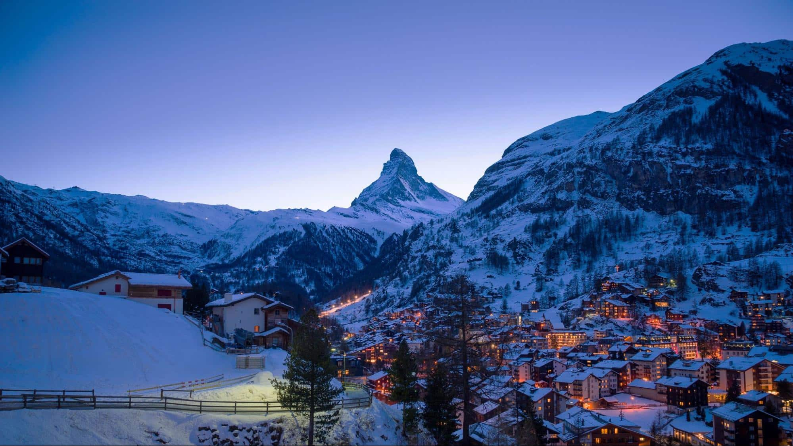
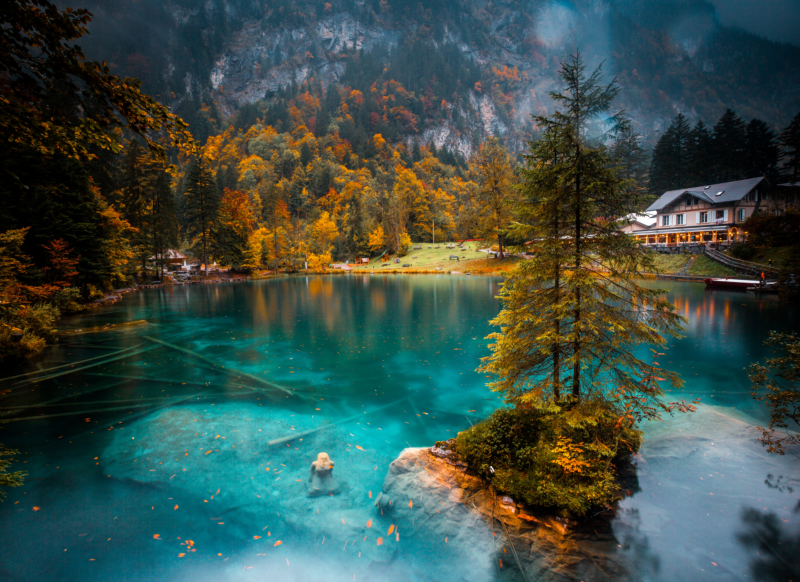
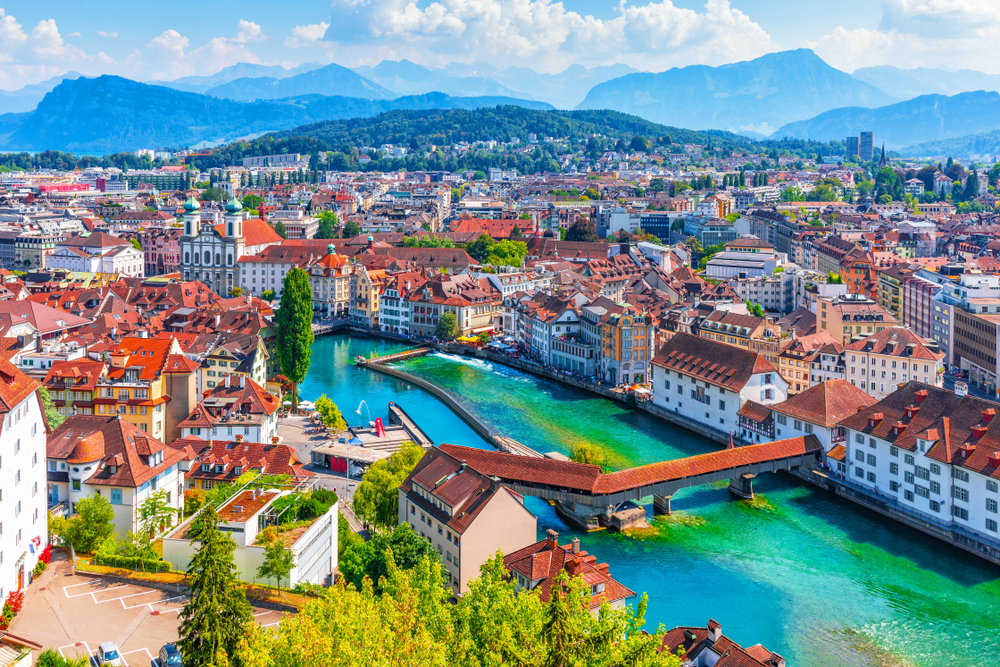
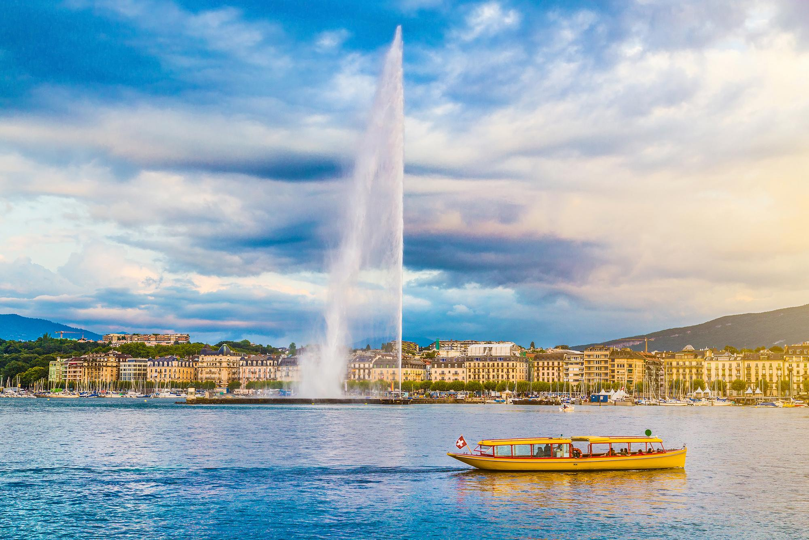

Un exemple des paysages qui vous donneront envie de faire vos valises pour vous rendre dans ces lieux
magnifique

Le Village de Zermatt avec couché de soleil et vue sur le Cervin

En Suisse, il y a des lac méconnus mais tout aussi magnifiques
comme le Blausee

Il y a beacoup de villes splendides mais il y en a qui ressortent du lot

En Suisse se trouve des choses emblématiques comme le jet d'eau de Genève